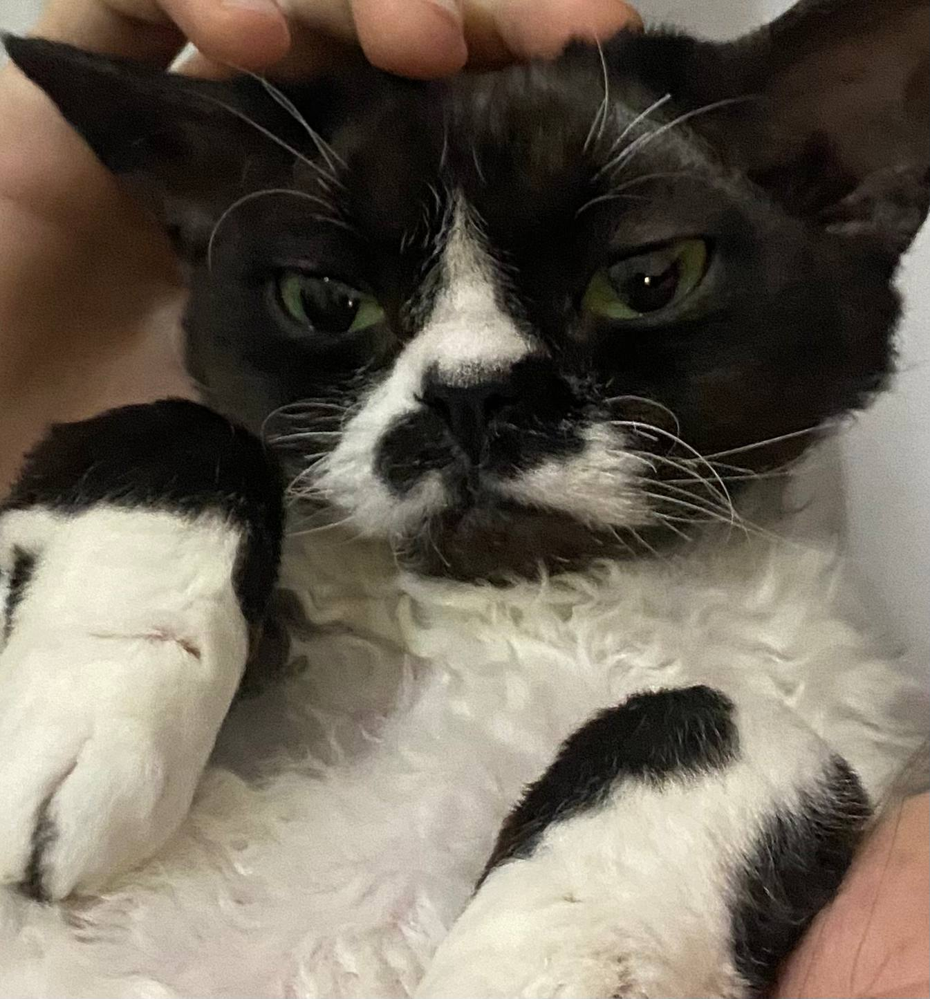

Lilya, the smelly cat from Dnipro, who lives in Wroclaw.
Date of birth: 05.04.2023
Marital status: Single
Employment: Office of the President of Ukraine
Education: Taras Shevchenko National University of Kyiv;
Bachelor’s Degree in International Finance and Investments

She likes watching crows and she's scared of chihuahuas. And other small animals as well.
Gallery